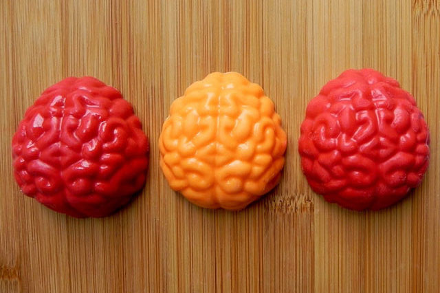

How to Make Brain Cookies

Gross and Tasty Halloween Cookie
Looking for a gross but tasty Halloween cookie? These Zombie brain Halloween sugar cookies are gross and tasty! Made with no spread sugar cookie dough and homemade royal icing these halloween cookies are perfectly gross looking but they taste amazing!
I am going to eat the brains!!! On the plus side, they will taste very yummy! Zombie brain Halloween cookies will sure be a hit at your next Halloween party or just for you to enjoy while you watch your favorite zombie show.
Ingredients
Zombie Brain Cookies Ingredients
- Sugar cookie dough
- Royal Icing
- 30 Pecans or Walnuts
- 2-3 drops Red food gel coloring
- Pastry bags or squeeze bottles
Sugar Cookies Ingredients
- 3 Cups Flour
- 1 1/2 teaspoon baking powder
- 1 egg
- 1 teaspoon vanilla extract
- 1 cup butter
Royal Icing Ingredients
- 1 pound confectioners sugar Powdered sugar
- 5 tablespoons meringue powder
- 6 tablespoons water
- 1 teaspoon clear flavor extrac
- Red Gel Food Coloring
Steps
How to Make Sugar Cookies
- In a large bowl or with your stand mixer cream the granulated sugar and butter until it is fluffy. If using the stand mixer it will take about 5 minutes.
- Once the sugar and butter is creamed together, add in the egg and vanilla extract.
- In a medium sized bowl mix the flour, baking powder, salt. Use a whisk to mix everything together thoroughly.
- Slowly add the flour mixture to the sugar, butter, egg and vanilla extract mixture. Mix everything until well incorporated.
- Put half of the freshly made dough between two sheets of parchment paper and roll it out to 1/4 inch thick.